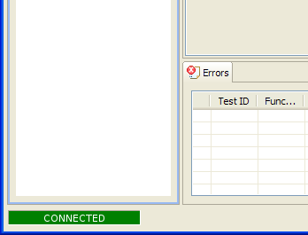

Connection to winIDEA
When defining test specification, function and variable names
must be specified. winIDEA knows names of all functions and
variables from debug info, and testIDEA can get this information
from winIDEA to help us with auto-completion. Therefore it is
convenient to have winIDEA running, when specifying
tests.
Once winIDEA is running, testIDEA
can connect to it. For convenience there are several ways to connect:
-
The simplest one is the main menu option
iTools | Connect to winIDEA
in iSYSTEM testIDEA.
-
The next possibility is simply pressing the Refresh button, and
testIDEA asks us, whether we want to connect.
-
It is also possible to configure testIDEA to connect
automatically, with
iTools | Preferences | testIDEA | Connect automatically.
Connection status is shown in the bottom left corner of the iSYSTEM testIDEA window:

Note 1: winIDEA must download the code for symbols to be
available. If we don't have target available, switching
winIDEA to demo mode will also do the trick (main menu option
Hardware | Demo mode in winIDEA).
Note 2: If testIDEA was started from winIDEA (menu
Test | Launch testIDEA), then it can connect only to this instance
of winIDEA. If we close the winIDEA
instance, testIDEA can not connect anywhere, and we must
close it also. This behavior may seem inconvenient, but if we have
several instances of winIDEA and testIDEA running, this tight
coupling provides a controllable development environment.
To get a testIDEA instance, which can connect to
any winIDEA, run it
directly from Windows, not from winIDEA.